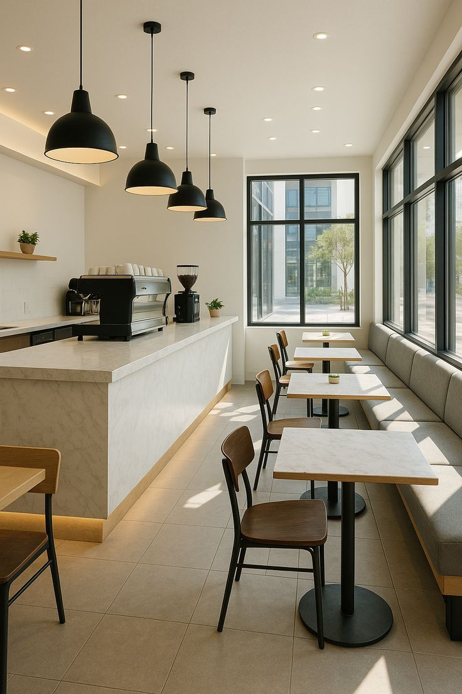
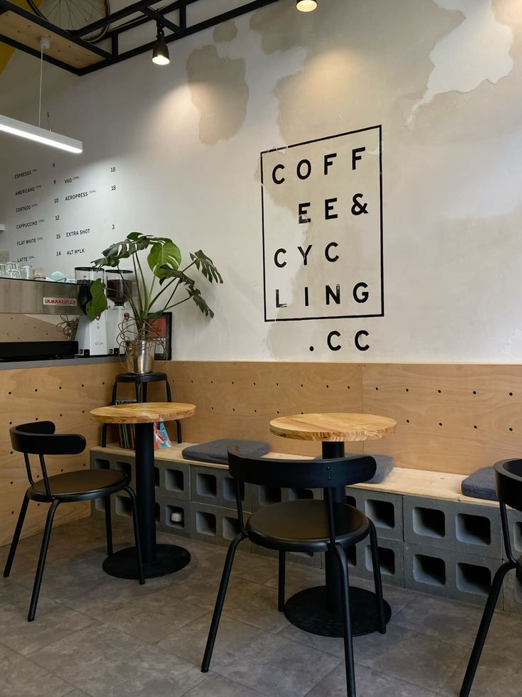
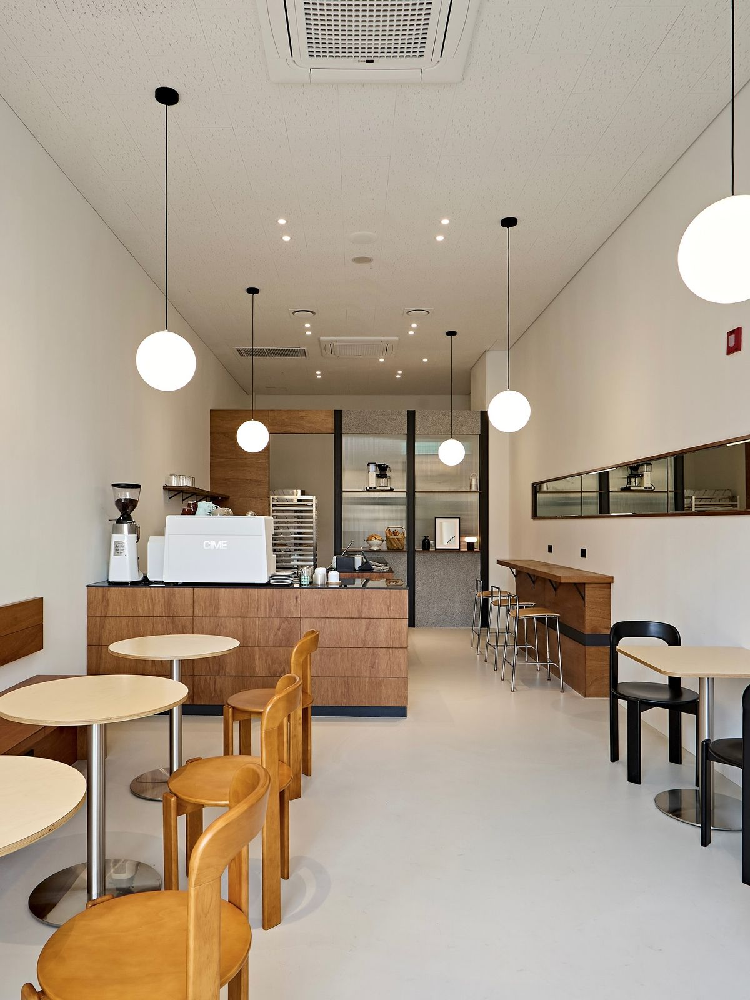
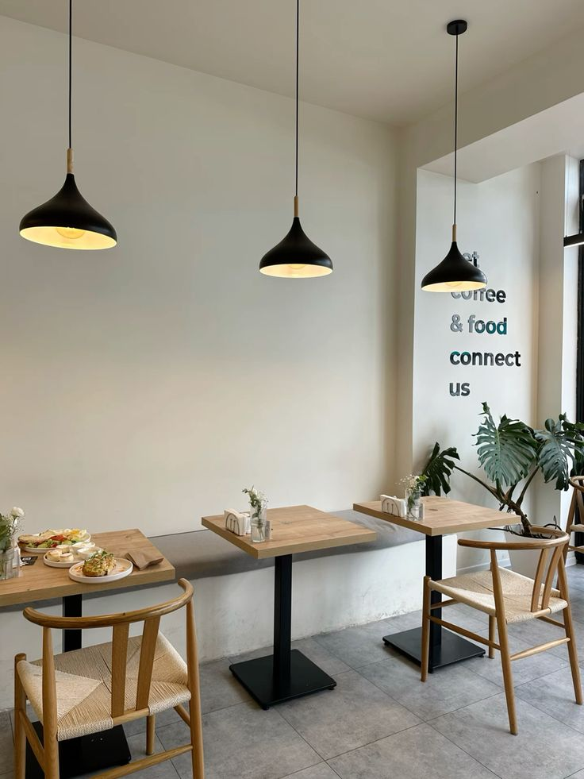
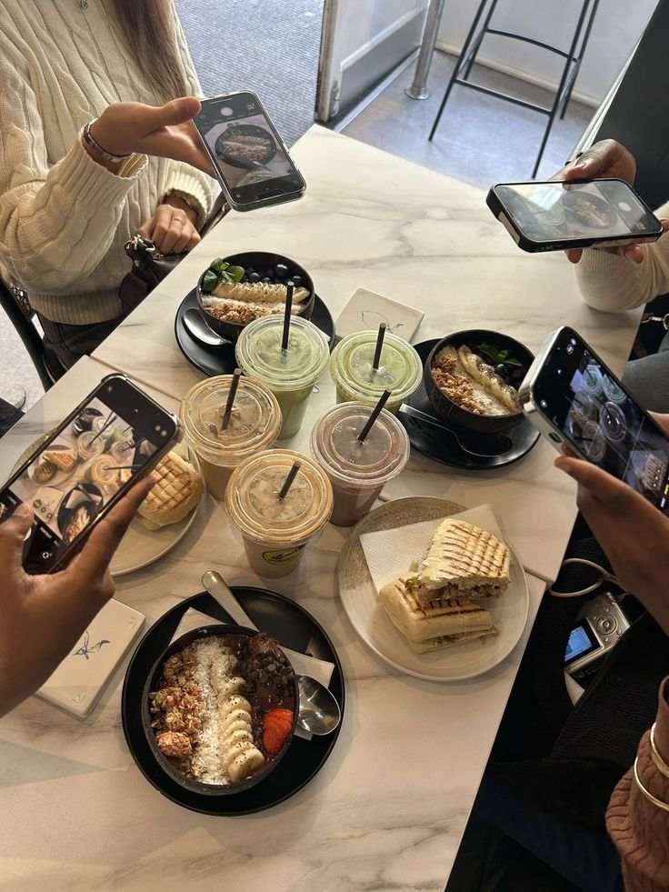
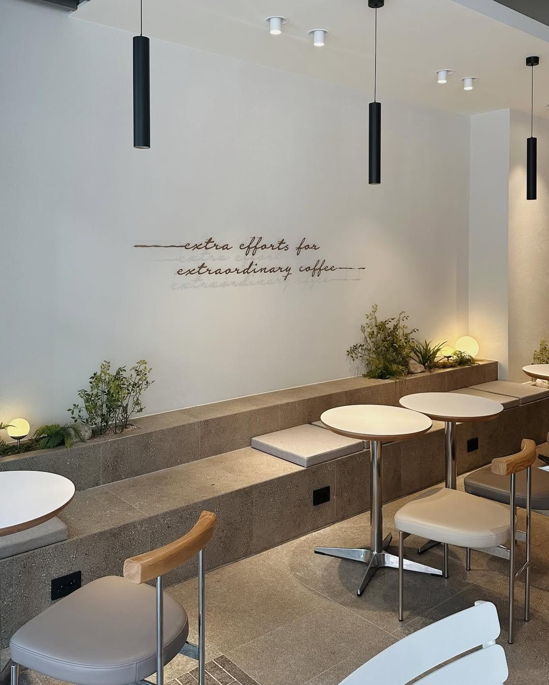

← 메인으로3장 공간 · Spaces
하루 중 혼자가 되고 싶을 때
작업 공간, 나만의 방, 카페
세 곳 모두 혼자서 나에게 집중할 수 있는 곳이다
— 6주 기록에서
작업 공간
여기서 주로 하는 일
디자인 작업
가장 오래 있고 싶을 때
집중이 필요한 때
머물고 싶은 이유
여기 앉으면 바로 집중이 돼서


나만의 방
여기서 주로 하는 일
하루를 정리하기
가장 오래 있고 싶을 때
혼자 있고 싶을 때
머물고 싶은 이유
온전히 나로 있을 수 있어서


카페
여기서 주로 하는 일
커피 마시며 쉬기
가장 오래 있고 싶을 때
머리를 비우고 싶을 때
머물고 싶은 이유
일과 쉼 사이에 잠깐 멈출 수 있어서





